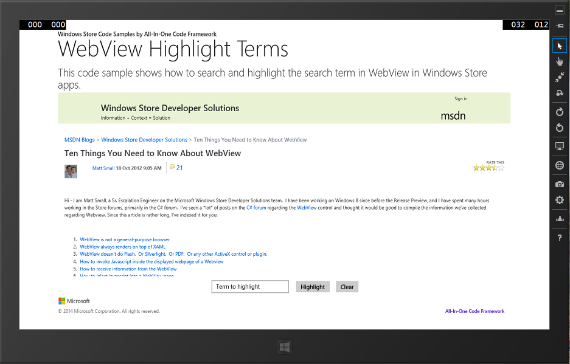

How to search and highlight the search term in WebView in universal Windows apps

How to search and highlight the search term in WebView in universal Windows apps
Introduction
WebView continues to be a hot topic in the Windows Store app forums. The ability to bring in web content and manipulate it as you wish is a strong desire for many developers. This code sample will show you how to highlight search terms in any page which you load into a WebView by injecting and invoking custom-written JavaScript from your Windows Store app.
Please note: The samples were written based on the following blog entry:
Running the Sample
You can build and run the sample in Visual Studio 2013. The following is the screenshot of the running sample.

Using the Code
highlight.js file is responsible for highlighting terms and clearing the highlight.
var OriginalBody;
function HighlightFunction(SearchTerm) {
if (OriginalBody == null) { OriginalBody = document.getElementsByTagName('body')[0].innerHTML; }
var bdy = document.getElementsByTagName('body')[0].innerHTML;
var re = new RegExp('(\\b' + SearchTerm + '\\b)', 'ig');
bdy = bdy.replace(re, '$1<\/span>');
var re1 = new RegExp('(<[^>]*?)(' + SearchTerm + ')<\/span>(.*?>)', 'ig');
bdy = bdy.replace(re1, '$1$2$3');
var re2 = new RegExp('(<script.*?>)(' + SearchTerm + ')<\/span>(<\/script>)', 'ig');
bdy = bdy.replace(re2, '$1$2$3');
var re3 = new RegExp('(<textarea.*?>)(' + SearchTerm + ')<\/span>(<\/textarea>)', 'ig');
bdy = bdy.replace(re3, '$1$2$3');
document.getElementsByTagName('body')[0].innerHTML = bdy;
}
function RestoreFunction() {
document.getElementsByTagName('body')[0].innerHTML = OriginalBody;
}
var OriginalBody;
function HighlightFunction(SearchTerm) {
if (OriginalBody == null) { OriginalBody = document.getElementsByTagName('body')[0].innerHTML; }
var bdy = document.getElementsByTagName('body')[0].innerHTML;
var re = new RegExp('(\\b' + SearchTerm + '\\b)', 'ig');
bdy = bdy.replace(re, '$1<\/span>');
var re1 = new RegExp('(<[^>]*?)(' + SearchTerm + ')<\/span>(.*?>)', 'ig');
bdy = bdy.replace(re1, '$1$2$3');
var re2 = new RegExp('(<script.*?>)(' + SearchTerm + ')<\/span>(<\/script>)', 'ig');
bdy = bdy.replace(re2, '$1$2$3');
var re3 = new RegExp('(<textarea.*?>)(' + SearchTerm + ')<\/span>(<\/textarea>)', 'ig');
bdy = bdy.replace(re3, '$1$2$3');
document.getElementsByTagName('body')[0].innerHTML = bdy;
}
function RestoreFunction() {
document.getElementsByTagName('body')[0].innerHTML = OriginalBody;
}
In MainPage, first we open and read the highlight.js file.
protected async override void OnNavigatedTo(NavigationEventArgs e)
{
StorageFile highlightFile = await StorageFile.GetFileFromApplicationUriAsync(new Uri("ms-appx:///highlight.js"));
highlightFunctionJS = await FileIO.ReadTextAsync(highlightFile);
}
void MainPage::OnNavigatedTo(NavigationEventArgs^ e)
{
create_task(StorageFile::GetFileFromApplicationUriAsync(ref new Uri("ms-appx:///highlight.js"))).then([this](StorageFile^ highlightFile)
{
create_task(FileIO::ReadTextAsync(highlightFile)).then([this](String^ s)
{
m_highlightFunctionJS = s;
});
});
}
protected async override void OnNavigatedTo(NavigationEventArgs e) { StorageFile highlightFile = await StorageFile.GetFileFromApplicationUriAsync(new Uri("ms-appx:///highlight.js")); highlightFunctionJS = await FileIO.ReadTextAsync(highlightFile); }
Then implement highlight/clear functions by invoking JavaScript function asynchronously.
private async void HighlightButton_Click(object sender, RoutedEventArgs e)
{
if(String.IsNullOrWhiteSpace(HighlightTerm.Text) || HighlightTerm.Text == "Term to highlight")
{
HighlightTerm.Text = "Term to highlight";
return;
}
if (!cleared)
{
ClearButton_Click(sender, e);
}
await MyWebView.InvokeScriptAsync("eval", new string[] { highlightFunctionJS + " HighlightFunction('" + HighlightTerm.Text + "');" });
HighlightTerm.Text = "Term to highlight";
cleared = false;
}
private async void ClearButton_Click(object sender, RoutedEventArgs e)
{
await MyWebView.InvokeScriptAsync("eval", new string[] { highlightFunctionJS + " RestoreFunction();" });
cleared = true;
}
void CppWindowsStoreAppWebViewHighlightWords::MainPage::HighlightButton_Click(Platform::Object^ sender, Windows::UI::Xaml::RoutedEventArgs^ e)
{
if (HighlightTerm->Text == "" || HighlightTerm->Text == "Term to highlight")
{
HighlightTerm->Text = "Term to highlight";
return;
}
if (!m_isCleared)
{
ClearButton_Click(sender, e);
}
Array<String^>^ argsArray = { m_highlightFunctionJS + " HighlightFunction('" + HighlightTerm->Text + "');" };
Platform::Collections::Vector<String^>^ arguments = ref new Platform::Collections::Vector<String^>(argsArray);
create_task(this->MyWebView->InvokeScriptAsync(ref new String(L"eval"), arguments)).then([this](String^ result)
{
HighlightTerm->Text = "Term to highlight";
m_isCleared = false;
});
}
void CppWindowsStoreAppWebViewHighlightWords::MainPage::ClearButton_Click(Platform::Object^ sender, Windows::UI::Xaml::RoutedEventArgs^ e)
{
Array<String^>^ argsArray = { m_highlightFunctionJS + " RestoreFunction();" };
Platform::Collections::Vector<String^>^ arguments = ref new Platform::Collections::Vector<String^>(argsArray);
create_task(this->MyWebView->InvokeScriptAsync(ref new String(L"eval"), arguments)).then([this](String^ result)
{
m_isCleared = true;
});
}
private async void HighlightButton_Click(object sender, RoutedEventArgs e) { if(String.IsNullOrWhiteSpace(HighlightTerm.Text) || HighlightTerm.Text == "Term to highlight") { HighlightTerm.Text = "Term to highlight"; return; } if (!cleared) { ClearButton_Click(sender, e); } await MyWebView.InvokeScriptAsync("eval", new string[] { highlightFunctionJS + " HighlightFunction('" + HighlightTerm.Text + "');" }); HighlightTerm.Text = "Term to highlight"; cleared = false; } private async void ClearButton_Click(object sender, RoutedEventArgs e) { await MyWebView.InvokeScriptAsync("eval", new string[] { highlightFunctionJS + " RestoreFunction();" }); cleared = true; }
More Information
• WebView class
http://msdn.microsoft.com/en-us/library/windows/apps/windows.ui.xaml.controls.webview.aspx
• WebView.InvokeScriptAsync method
• WebView Magic Tricks: Highlight a Search Term
Microsoft All-In-One Code Framework is a free, centralized code sample library driven by developers' real-world pains and needs. The goal is to provide customer-driven code samples for all Microsoft development technologies, and reduce developers' efforts in solving typical programming tasks. Our team listens to developers’ pains in the MSDN forums, social media and various DEV communities. We write code samples based on developers’ frequently asked programming tasks, and allow developers to download them with a short sample publishing cycle. Additionally, we offer a free code sample request service. It is a proactive way for our developer community to obtain code samples directly from Microsoft.